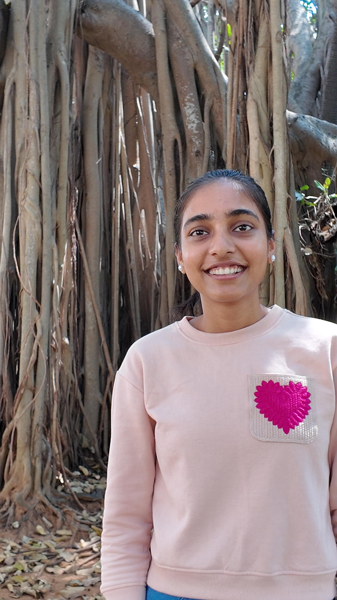

Ms. Chithra Ashok has been selected for the JST LOTUS Program (Linking Overseas and Japan’s University Students), and will visit the laboratory of Prof. Takami at Nagoya University, Japan.
During her stay, she will conduct an exploratory study on FLP-Functionalized Layered Double Hydroxides for Electrocatalytic Ammonia Splitting, contributing to ongoing collaborative research between India and Japan.
This project promotes cross-border collaboration through the dispatch of an Indian student to Japan, together with short-term research visits by Indian principal investigators. It serves as a platform for developing next-generation researchers and fostering bilateral technical exchange. The joint outcomes are expected to contribute to future proposals addressing shared strategic goals in decarbonization and rare-metal substitution.
We congratulate Ms. Ashok and look forward to her active engagement in this exciting opportunity in materials chemistry.